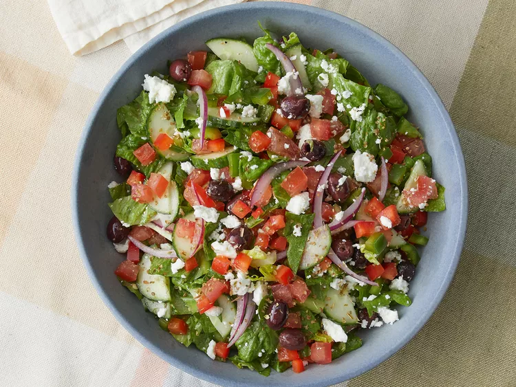

Greek-salad

Greek-salad Recipe
Greek-salad is a mixture of raw edible green vegetables with other light vegetables.
Ingredients
- 1 head romaine lettuce-rinsed,dried and chopped.
- 1 cucumber, sliced.
- 2 large tomatoes, chopped.
- 1 can pitted black olives.
- 1 green bell pepper, chopped.
- 1 red bell pepper, chopped.
- 1 onion, thinly sliced.
- 1 cup crumbled feta cheese.
- 6 tablespoons olive oil
- 1 lemon, juice
- 1 teaspoon deired oregano
- ground black pepper to taste
Steps
- Combine all vegetable ingredients and cheese in a large bowl.
- Whisk olive oil, lemon juice, oregano, and black pepper together in a small bowl.
- Pour dressing over salad, toss well to combine, and serve.